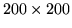
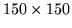

<!DOCTYPE HTML PUBLIC "-//W3C//DTD HTML 3.2 Final//EN">
<!-- Converted with jLaTeX2HTML 98.1p1 release (March 2nd, 1998) + JP patch 2.0 (March 16th, 1998)
patched by Kenshi Muto (mutou@three-a.co.jp), Three-A Systems,Co.,Ltd.
LaTeX2HTML 98.1p1 release (March 2nd, 1998)
originally by Nikos Drakos (nikos@cbl.leeds.ac.uk), CBLU, University of Leeds
* revised and updated by:  Marcus Hennecke, Ross Moore, Herb Swan
* with significant contributions from:
  Jens Lippmann, Marek Rouchal, Martin Wilck and others  -->
<HTML>
<HEAD>
<TITLE>bench</TITLE>
<META NAME="description" CONTENT="bench">
<META NAME="keywords" CONTENT="REFS">
<META NAME="resource-type" CONTENT="document">
<META NAME="distribution" CONTENT="global">
<META HTTP-EQUIV="Content-Type" CONTENT="text/html; charset=iso-2022-jp">
<LINK REL="STYLESHEET" HREF="REFS.css">
<LINK REL="next" HREF="node24.htm">
<LINK REL="previous" HREF="node22.htm">
<LINK REL="up" HREF="node4.htm">
<LINK REL="next" HREF="node24.htm">
</HEAD>
<BODY BGCOLOR=NavajoWhite>
<!-- Navigation Panel -->
<A NAME="tex2html1022"
 HREF="node24.htm">
</A> 
<A NAME="tex2html1019"
 HREF="node4.htm">
</A> 
<A NAME="tex2html1013"
 HREF="node22.htm">
</A> 
<A NAME="tex2html1021"
 HREF="node1.htm">
</A>  
<BR>
<STRONG> Next:</STRONG> <A NAME="tex2html1023"
 HREF="node24.htm">bit_and</A>
<STRONG> Up:</STRONG> <A NAME="tex2html1020"
 HREF="node4.htm">$B%j%U%!%l%s%9%^%K%e%"%k(J</A>
<STRONG> Previous:</STRONG> <A NAME="tex2html1014"
 HREF="node22.htm">bell</A>
<BR>
<BR>
<!-- End of Navigation Panel -->

<H2><A NAME="SECTION000419000000000000000">&#160;</A><A NAME="man_bench">&#160;</A>
<BR>
bench
</H2><FONT SIZE="-1"><FONT SIZE="-1"><FONT SIZE="-1"><FONT SIZE="-1"><FONT SIZE="-1"><FONT SIZE="-1"></FONT></FONT></FONT></FONT></FONT></FONT><DL COMPACT>

<DT>$B!ZL\E*![(J
<DD>bench - $B%Y%s%A%^!<%/%W%m%0%i%`(J
<DT>$B!Z7A<0![(J
<DD><PRE>
bench;
</PRE><FONT SIZE="-1"><DT>$B!Z>\:Y![(J
<DD>$B0J2<$N(J 6 $B8D$N%Y%s%A%^!<%/$r9T$&!#(J
</FONT>
<P><DL COMPACT>
<DT>1.
<DD>$B<B9TNs(J(
<!-- MATH: $200 \times 200$ -->
)$B$N>h;;(J
<DT>2.
<DD>$B<B9TNs(J(
<!-- MATH: $200 \times 200$ -->
)$B$N5U9TNs(J
<DT>3.
<DD>$B<B9TNs(J(
<!-- MATH: $150 \times 150$ -->
)$B$N8GM-CM(J
<DT>4.
<DD>
<!-- MATH: $2^{17}(=131072)$ -->
2<SUP>17</SUP>(=131072)$B8D$NJ#AG%G!<%?$N(J FFT
<DT>5.
<DD>100000 $B2s$N(J FOR $B%k!<%W(J($B9TNs@.J,BeF~(J)
<DT>6.
<DD>ODE $B4X?t$K$h$k@~7A7O%7%_%e%l!<%7%g%s(J 1.0[s]
</DL>
<P>
<FONT SIZE="-1"><DT>$B!ZNcBj![(J
<DD></FONT><PRE>
bench
</PRE><FONT SIZE="-1"><FONT SIZE="-1"><DT>$B!Z;2>H![(J
<DD></FONT></FONT>
<DIV><TT>demo(<A HREF="node50.htm#man_demo">2.47</A>)
<BR></TT></DIV><FONT SIZE="-1"><FONT SIZE="-1"><FONT SIZE="-1"></DL><FONT SIZE="-1"><FONT SIZE="-1"><FONT SIZE="-1"></FONT></FONT></FONT></FONT></FONT></FONT>
<BR><HR>
<ADDRESS>
Masanobu KOGA
$BJ?@.(J11$BG/(J10$B7n(J2$BF|(J
</ADDRESS>
</BODY>
</HTML>
